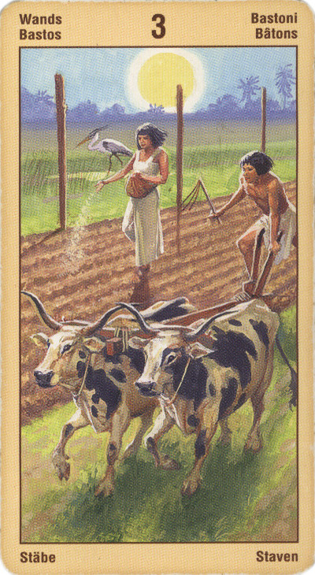

Тройка Жезлов
Прямое положение: карта символизирует основательную (авторитетную) силу, предприимчивость, усилия, торговлю, коммерцию, развертывание (дела). Это его корабли, перевозящие его же товары, которые продаются за морем.
Значение: Это – Путешественник, человек, пустившийся в свое время в далекий и небезопасный путь, чтобы дойти до моря. Он покинул привычный мир, изменил в своей жиз¬ни многое и изменился сам. Путь его был труден, он устал, но цели своей он достиг. Море – это новый мир, новая жизнь, открывшаяся человеку. Теперь он свободен от бремени прошлого.
Тройка Жезлов сходна по значению с Двойкой, только здесь речь идет не об интеллектуальном, а о материальном труде – строительстве дома, покупке квартиры, создании фирмы и т.п. В прямом положении она дает благопрятный прогноз.
Все, над чем вы так тяжело и упорно работали, начинает приносить свои плоды. Ваши идеи, энергия и энтузиазм сейчас начинают давать ощутимые положительные результаты, особенно в таких сферах, как бизнес, коммуникации, литература или же в области изобретений.
Тройка Жезлов объединяет в себе два важных образа. Во-первых, это человек проделавший долгий и трудный путь и достигший, наконец, вершины, и, во-вторых, это тот, кому с высоты открылся широкий обзор окружающего мира.
Прочный фундамент - наша опора, и перспектива светлого будущего, наша цель - вот два значения этой карты.
На уровне этой карты формируется вектор социальной активности. Тройка жезлов всегда связана с пониманием, осознанием.
Тройка Посохов - знак того, что ваши действия на данный момент ни в чем не противоречат замыслам судьбы: вы попали в нужное русло и теперь очень быстрыми темпами продвигаетесь к конечной цели вашего предприятия. Подождите еще немного - и вскоре добьетесь исполнения желания!
Очень часто (особенно в сочетании с Арканами «Мир» и «Император») появление в раскладе Тройки Посохов предвещает появление, в свою очередь, в вашей жизни нового человека, общение с которым принесет много приятных эмоций и переживаний, а также интересной и ценной информации.
В перевернутом виде рекомендует еще раз все обдумать и, скорее всего, отложить задуманное до лучших времен.
В перевернутом положении карта означает: сотрудничество, в котором вы несвободны, предательство, преуменьшение сил противника,
пренебрежение предлагаемой помощью, либо чрезмерно осторожное отношение к тому; кто эту помощь предлагает (перестраховка).